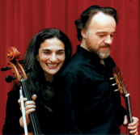
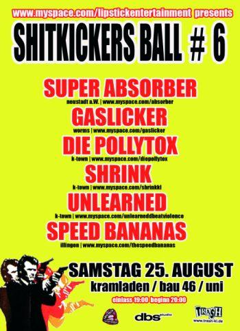
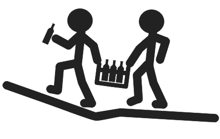

Tin Pan Alley Bluesband am Vogelwoog
 Am Sonntag spielt die TIN PAN ALLEY BLUESBAND am Vogelwoog. Beginn 16.00 Uhr, Eintritt frei!
Am Sonntag spielt die TIN PAN ALLEY BLUESBAND am Vogelwoog. Beginn 16.00 Uhr, Eintritt frei!
http://www.tin-pan-alley.com/
Am Sonntag spielt die TIN PAN ALLEY BLUESBAND am Vogelwoog. Beginn 16.00 Uhr, Eintritt frei!
http://www.tin-pan-alley.com/
 Am Sonntag ist Humbergturm Fest! Veranstalter ist der Humbergturm Verein Kaiserslautern e.V. Als besonderes Highlight haben sich Seiler angekündigt, die Einblicke in ihre Handwerkskunst gewähren.
Am Sonntag ist Humbergturm Fest! Veranstalter ist der Humbergturm Verein Kaiserslautern e.V. Als besonderes Highlight haben sich Seiler angekündigt, die Einblicke in ihre Handwerkskunst gewähren.
Für die musikalische Unterhaltung sorgen die Bexbacher Straßenmusikanten sowie Die Mackenbacher. Los geht es um 11.00 Uhr mit einem Wortgottesdienst. [via bewegungsmelder]
Leider veraltete Homepage: http://humberg.gmxhome.de/
Am Samstag spielen Mothers Little Helper Classic Bluesrock im Irish House. Beginn 20.00 – Eintritt frei(?)
Serenada Española gibt am Sonntag ein Sommernachtskonzert im Theodor Zink Museum. Auf der Tournee 2007 präsentiert das Duo Burstein & Legnani sein neuestes Programm mit feurigen andalusischen Tänzen und musikalischen Landschaftsbildern eine farbenprächtige Palette spanischer Musik von großem Saitenschlag. Dargeboten wird eine faszinierende Tonmalerei mit traditionellen Inhalten in kunstvollen Arrangements für Violoncello und Gitarre: Meisterwerke von Isaac Albéniz, Pablo de Sarasate, Enrique Granados u. a. Die musikalische Reise führt auch nach Lateinamerika, dem Kontinent der beschwingten Rhythmen.
Beginn 20.00, Theodor Zink Museum Kaiserslautern, Steinstraße
Eintritt 15.00 EUR, erm. 12.00 EUR
Am Samstag ist wieder SHITKICKERS BALL #6 im Kramladen, bau 46, uni kaiserslautern.
Mit dabei:
-speed bananas / hc aus illingen
-unlearned / d-beat violence aus k-town (moshfred,chris,fabse)
-shrink / indie-rock aus kl
-die pollytox / pollypunk aus kl
-gaslicker / rock’n’gas aus worms
-super absorber / speed rock’n’roll aus neustadt
einlass 19:00 uhr, beginn 20:00 uhr
wie immer sehr humane getränkepreise, bier 1.50 & schnaps 1
http://www.myspace.com/lipstickentertainment
Auf zum Bierkisten Rennen! Am Samstag ist es mal wieder so weit, das Alljährliche Rennen startet wieder an der Uni hinter Gebäude 48.
Auch Zuschauer wirds nicht langweilig: Es gibt Getränke, Gegrilltes und sonstige Verpflegung.
Alles weitere unter: http://www.bierkistenrennen.de
 Die Gewinner des “24th International Hoeilaart Jazz Contest 2002” – L14,16 spielen am Donnerstag im Theodor-Zink-Museum, Steinstr. 48, Kaiserslautern.
Die Gewinner des “24th International Hoeilaart Jazz Contest 2002” – L14,16 spielen am Donnerstag im Theodor-Zink-Museum, Steinstr. 48, Kaiserslautern.
Ergebnis des Entwicklungsprozesses, den die Band in den vergangenen drei Jahren durchlaufen hat: die Kompositionen und Arrangements sind eigenwillig frisch und komplex, die Musiker spielen gruppendynamisch wie auch solistisch innovativ und reif. Quelle: Homepage
Edle Weine, Sekt usw. sowie ein kleines Essensangebot sorgen für das Wohl der Konzertbesucher.
Beginn 20.00 Uhr, Eintritt 10 (Abendkasse), 8 (Vorverkauf, 0631-8923874)
http://www.l1416.de/
 PAULA kommt nach Kaiserslautern! Auf ihrer “Ruhig Blut”-Tour 2007 macht sie am Freitag halt in der Kammgarn / Cotton Club. Support gibts von Underground Railroad.
PAULA kommt nach Kaiserslautern! Auf ihrer “Ruhig Blut”-Tour 2007 macht sie am Freitag halt in der Kammgarn / Cotton Club. Support gibts von Underground Railroad.
Beginn 20:30 Uhr. Eintritt 12 EUR.
http://www.paula-musik.de
Am Sonntag: Kunst(früh)stück mit Traumwelten – Künstlerisch-kulinarischer Sonntagmorgen in der Pfalzgalerie.
Nach der Kunstbetrachtung mit literarischen Texten erwartet die Besucher ein Frühstück, bei dem das Gehörte und Gesehene im Gespräch vertieft werden kann. Eine Anmeldung ist bis spätestens 23. August erforderlich unter der Telefonnummer 0631 3647-201, per Fax 0631 3647-202 oder E-Mail: info@pfalzgalerie.bv-pfalz.de. Der Unkostenbeitrag für das Frühstück liegt bei acht Euro.
Beginn ab 11.00 Uhr, Pfalzgalerie Kaiserslautern
Am Sonntag im Bender: Ich werde die Gewinner der vier Serenada Espanola Konzertkarten ziehen! Jeder ist herzlich dazu eingeladen. Ich denke spannend wird so um 21.00 Uhr, freu mich!